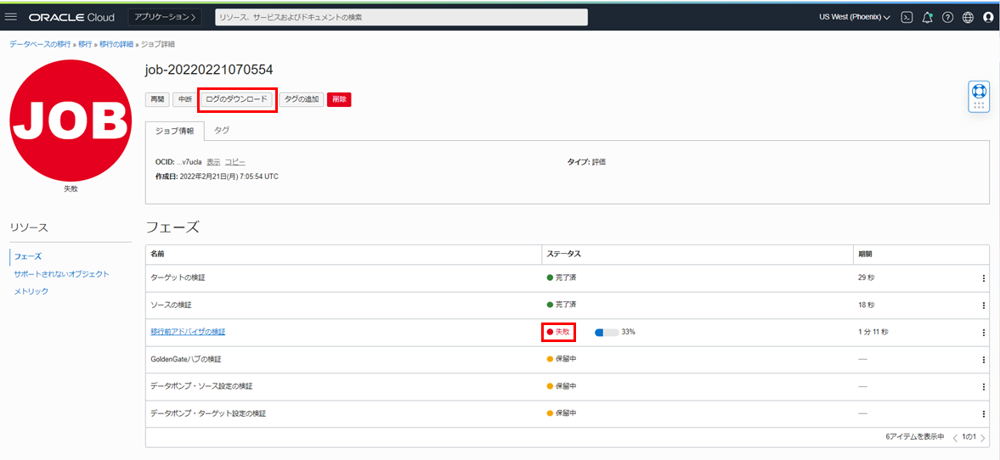
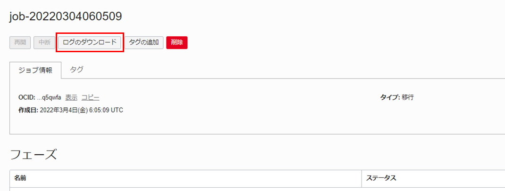

はじめに
Oracle Cloud Infrastructure Database Migration Service (DMS) は、オンプレミスまたはOCI上のOracle DatabaseからAutonomous Databaseに移行する際に利用できるマネージド・サービスです。エンタープライズ向けの強力なオラクル・ツール(Zero Downtime Migration、GoldenGate、Data Pump)をベースとしています。
DMSでは下記の2つの論理的移行が可能です。
- オフライン移行 - ソース・データベースのポイント・イン・タイム・コピーがターゲット・データベースに作成されます。移行中のソース・データベースへの変更はコピーされないため、移行中はアプリケーションをオフラインのままにする必要があります。
- オンライン移行 - ソース・データベースのポイント・イン・タイム・コピーがターゲット・データベースに作成されるのに加え、内部的にOracle GoldenGateによるレプリケーションを利用しているため、移行中のソース・データベースへの変更も全てコピーされます。そのため、アプリケーションをオンラインのまま移行を行うことが可能で、移行に伴うアプリケーションのダウンタイムを極小化することができます。
DMSに関するチュートリアルは304 : OCI Database Migration Serviceを使用したデータベース移行の前準備、305 : OCI Database Migration Serviceを使用したデータベースのオフライン移行、306 : OCI Database Migration Serviceを使用したデータベースのオンライン移行の計3章を含めた3部構成となっています。 DMSを使用してBaseDBで作成したソース・データベースからADBのターゲット・データベースにデータ移行を行います。
305 : OCI Database Migration Serviceを使用したデータベースのオフライン移行または306 : OCI Database Migration Serviceを使用したデータベースのオンライン移行を実施する前に必ず304 : OCI Database Migration Serviceを使用したデータベース移行の前準備を実施するようにしてください。
この章では、DMSを使用したデータベースのオフライン移行について紹介します。

目次 :
前提条件 :
- 「304 : OCI Database Migration Serviceを使用したデータベース移行の前準備」を参考に、データベース移行の前準備が完了していること。
- ターゲット・データベースのタイムゾーン・バージョンがソース・データベースのタイムゾーン・バージョンよりも最新になっていることを確認する(SELECT * FROM V$TIMEZONE_FILE;)。ターゲット・データベースのタイムゾーン・バージョンの方が古い場合はSRをあげる必要があります。
所要時間 : 約30分
1. ソース・データベースへのサンプル・データの追加
-
PDB上のスキーマに接続します。スキーマがない場合は検証用のスキーマを作成してください。SQL*Plusを利用する場合は、以下のようにホスト名、ポート番号、サービス名を指定します。
例：（$ sqlplus <スキーマ名>/<パスワード>@<ホスト名>:<ポート>/<サービス名>）
sqlplus testuser/WelCome123#123#@dbcs01.subnet.vcn.oraclevcn.com:1521/pdb1.subnet.vcn.oraclevcn.com -
PDB上にサンプル・データを追加します。
CREATE TABLE PERSONS ( PersonID int, LastName varchar(255), FirstName varchar(255), Address varchar(255), City varchar(255) );INSERT INTO PERSONS (PersonID, LastName, FirstName, Address, City) Values ('1', 'James', 'Steve', '123way', 'Los Angeles'); commit;exit;
2. 移行の作成
-
OCIコンソール・メニューから 移行とディザスタ・リカバリ → 移行 に移動します。
-
移行の作成 を選択します。
- 一般情報 の各項目は以下のように設定します。その他の入力項目はデフォルトのままにします。
- 名前 - 任意 ※名前にスペースを含めると移行の作成に失敗します。
設定後、Next をクリックします。
- データベースの選択 の各項目は以下のように設定します。
- ソース・データベース - 登録済みのソース・データベース（PDB）を選択します。
- データベースはプラガブル・データベース(PDB)です にチェックを付けます。
- 登録済みコンテナ・データベース - 登録済みのソース・データベース（CDB）を選択します。
- ターゲット・データベース - 登録済みのターゲット・データベースを選択します。
設定後、Next をクリックします。
- 移行オプション の各項目は以下のように設定します。
- 初期ロード - オブジェクト・ストレージ経由のデータポンプを選択します。
- ソース・データベース：
- 名前 - 任意
- パス - 任意
- SSLウォレット・パス- 任意
- オブジェクト・ストレージ・バケット - 使用したいオブジェクト・ストレージ・バケットを選択します。
設定後、作成 をクリックします。
-
作成した移行の状態が アクティブ になるまで待ちます。（3分ほどかかります。）
これで移行の作成は完了です。
3. 移行の検証
-
OCIコンソール・メニューから 移行とディザスタ・リカバリ → 移行 に移動します。
-
検証する移行の名前をクリックします。
-
検証 ボタンをクリックすると 移行の検証 ダイアログが表示されます。 検証 をクリックします。
-
リソース の一覧にある ジョブ をクリックし、実行中のジョブの名前をクリックします。
-
リソース の一覧にある フェーズ をクリックします。ここで実行中の検証のフェーズが確認できます。
-
検証が失敗した場合、フェーズ の ステータス に失敗 と表示されます。その場合、 ログのダウンロード ボタンをクリックしてログを参照することで、失敗の詳細を確認することができます。もう一度実行したい場合は、 中断 ボタンをクリックして検証を再度やり直してください。

移行前アドバイザの検証 で失敗した場合、フェーズ の 移行前アドバイザの検証 をクリックし、アドバイザ・レポートのダウンロード をクリックすることでCPAT (Cloud Premigration Advisor Tool)の結果を閲覧することができます。
CPATには次のような利点があります。
- ターゲット環境でサポートされていないデータベースで使用されている機能について警告します。
- データ・ポンプのエクスポートおよびインポート操作に使用する修復変更やパラメータ(あるいはその両方)に関する提案を作成します。
詳細については、Oracle Cloud Infrastructure Database移行サービスの使用 - 4 移行の管理 - 検証オプションの構成 をご参照ください。


-
全ての フェーズ の ステータス が 完了済 と表示されたら、移行の検証は完了です。
4. 移行の実行
-
OCIコンソール・メニューから 移行とディザスタ・リカバリ → 移行 に移動します。
-
実行する移行の名前をクリックします。
-
起動 ボタンをクリックします。
-
移行の開始 ダイアログが表示されます。続行する前にフェーズ後にユーザー入力が必要 にチェックを付けると、選択したフェーズの後に一時停止をするように設定できます。本チュートリアルではチェックを付けず、起動 をクリックします。
-
リソース の一覧にある ジョブ をクリックし、実行中のジョブの名前をクリックします。
-
リソース の一覧にある フェーズ をクリックします。ここで実行中の移行のフェーズが確認できます。
-
移行が失敗した場合、フェーズ の ステータス に失敗 と表示されます。その場合、 ログのダウンロード ボタンをクリックしてログを参照することで、失敗の詳細を確認することができます。もう一度実行したい場合は、 中断 ボタンをクリックして移行を再度やり直してください。

-
全ての フェーズ の ステータス が 完了済 と表示されたら、移行は完了です。
5. 移行データの確認
ソースPDBからターゲットADBにデータが正常に移行されているか確認します。
-
OCIコンソール・メニューから Oracle Database → Autonomous Database に移動します。

-
移行に使用したターゲット・データベースの表示名をクリックします。

-
データベース・アクション ボタンをクリックします。

-
SQL をクリックします。
-
画面左にあるナビゲーターでソースPDBで作成したサンプル・データが格納されているスキーマがあることを確認し、選択します。

-
ワークシートで以下のSQL文を実行します。
SELECT PERSONID, LASTNAME, FIRSTNAME, ADDRESS, CITY FROM TESTUSER.PERSONS;DMSのオブジェクト・ストレージとデータ・ポンプを使用した移行メソッドによって、1. ソース・データベースへのサンプル・データの追加で作成したサンプル・データがターゲットADBに移行されていることが確認できました。
以上で DMSを使用したデータベースのオフライン移行 は終了です。
オンライン移行を実行したい場合は、306 : OCI Database Migration Serviceを使用したデータベースのオンライン移行にお進みください。